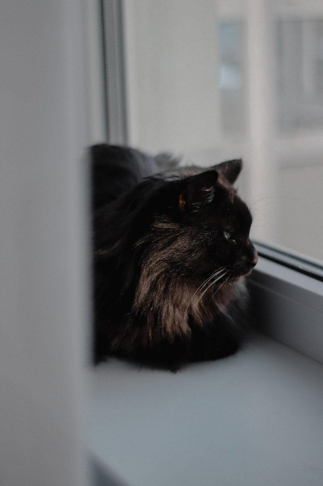

Proporciona una dieta equilibrada y adecuada para gatos. Evita darles alimentos tóxicos como chocolate y cebolla.
Cepilla a tu gato regularmente para evitar la formación de nudos en su pelaje. Limpia su caja de arena a diario.
Lleva a tu gato al veterinario para sus chequeos periódicos. Asegúrate de mantener al día sus vacunas y desparasitaciones.
Proporciona juguetes y actividades para mantener a tu gato activo y mentalmente estimulado.
Dale a tu gato el cariño y la atención que necesita. Pasa tiempo de calidad con él y bríndale afecto.
